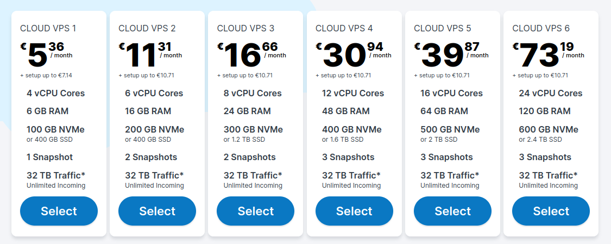
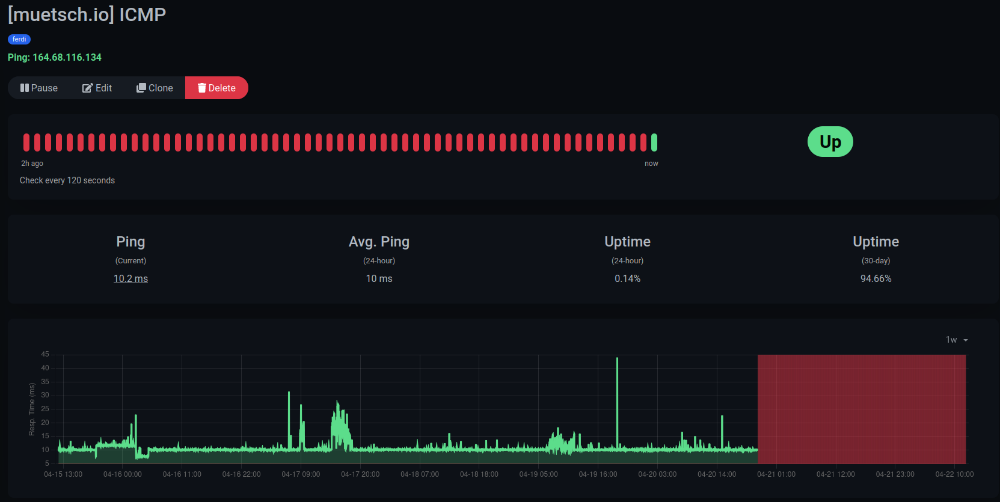

I’m usually not a person to rant on companies. But in this case, my experience with Contabo was so bad I felt like wanting to sort of warn people from taking a bad decision and present better alternatives instead.
Contabo offerings
Contabo is one of many hosting providers that typically offer classic webhosting, virtual private servers (VPS), virtual dedicated servers (VDS), managed block storage, etc. - essentially infrastructure for hobbyists or companies who don’t want to run an own data center or go to AWS (because they’ll probably not need it). Contabo has super cheap deals, for example, you can get a 4 CPUs, 6 GB RAM, 400 GB SSD VPS for just 4.50 € / month. The prices are actually quite appealing. Plus, they run their virtual servers on KVM - compared to other cheap hosting providers, who often times use OS-level virtualization (e.g. with OpenVZ) that comes with a lot of inconvenient limitations.
However, this comes at a price. The downside to these cheap offerings if only a 95 % annual uptime guarantee. This means that your server may be down for a whole 18 days per year, or, 1 hour 12 mins per day on average (see uptime / SLA calculator). That’s quite bad, if you think about it - especially considering that other providers (e.g. netcup) give you over 99 % SLAs.

My experiences
I’ve had a couple of personal services, as well as Wakapi.dev, Anchr.io and a few others running on a Contabo VPS for years. The server went down more or less regularly - on average, probably like once a month for one or two hours. While it was annoying, it didn’t hurt me a lot, because I didn’t have super important stuff running on it. What really bothered me, though, was their communication: usually they didn’t provide any information on the incident or at least a notice that something was wrong and that they would be working on fixing it.
The last straw breaking the camel’s back
I thought about switching providers every now and then, but always got to the conclusion that it wouldn’t be worth the efforts. Last week, though, the overstretched my patience. On Saturday at around 10 pm I received a Telegram message from my Uptime Kuma monitoring, telling me that the server was down again. At this point, I was already used to it. However, this downtime was meant to last for days.
After my VPS was still offline the next morning, I started to become nervous. I checked their X page (@ContaboCom) and it realized I wasn’t the only one facing issues. Apparently, not only the Nuremberg location was affected, but also data centers in Singapore, the US and other Contabo data centers in Germany. But it wasn’t a total outage: my friend’s VPS, located in the same DC, was still up. We tracerouted the packets and concluded that there must be some networking / routing problem. Their status page was still pretending that everything was fine and there were “no interrupations”. Thanks. In the meanwhile, people on X started ranting.
Again, they didn’t communicate any problems and didn’t respond to tickets. If you follow their X page, those issues seem to have been around for quite a while already and seem to still continue.
The longer my server was inaccissble, the more nervous I became. A few semi-important customer services were running on the VPS as well, which would have needed to be up again at latest Monday morning. So I started restoring the most important things from backups and moved temporarily moved them to another server at a different provider.
Eventually, it wasn’t until Monday noon when my VPS came back online - again, without any notice from their support team since the incident had started. Our suspicion regarding the networking issue turned out correct: the server itself had been running for the whole time. It just didn’t have internet connection.

For me, this was the last straw that broke the camel’s back. I decided to switch providers and cancel my Contabo subscription as soon as possible. Thanks to this great article (use Firefox- or Chrome translation features to translate into English) on cloning an entire disk via dd over SSH, migration was actually super easy and hassle-free.
Alternatives
Again, I don’t intend to rant on Contabo. Considering my past experiences, however, I just think there are much better alternatives.
- Friends of mine are super happy with netcup VPS’ and managed hosting and even run while business infrastructures there. They are similarly cheap, but guarantee much higher uptime (also, they offer ARM64 servers, btw.). netcup is also where I decided to switch to.
- PHP-Friends looks promising as well, even though I didn’t use their services, yet. They write very interesting technical blog posts on X, also (@phpfriends).
- At TLDHost I only purchased a simple webhosting, no VPS, but their support was exceptionally great when I used it. The owner itself would respond to my tickets and implement small custom technical changes for me.
- Hetzner is another very popular choice and there are many more …